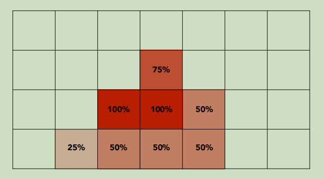
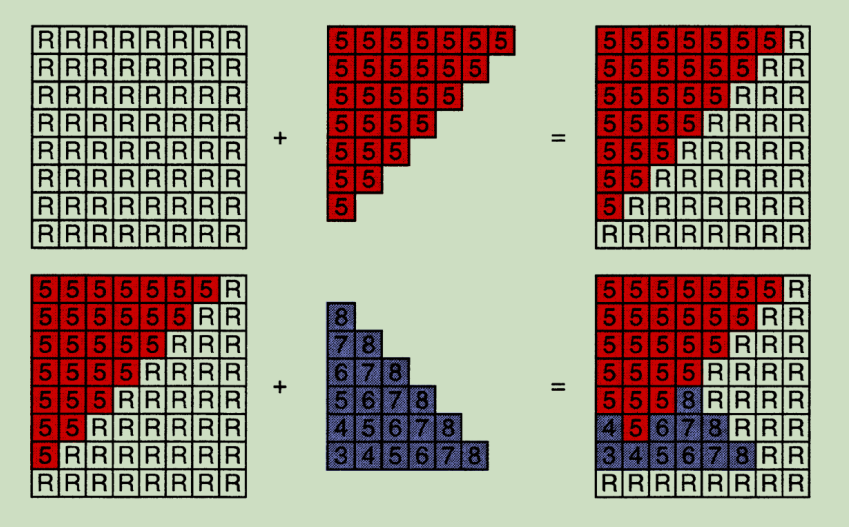
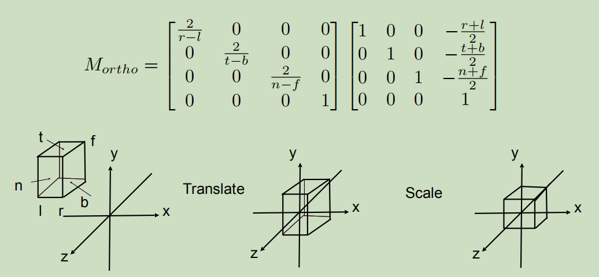
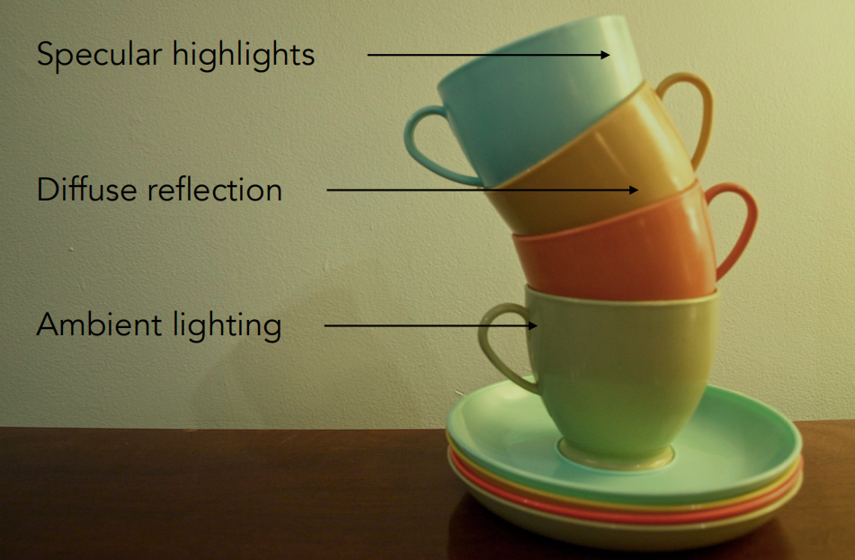
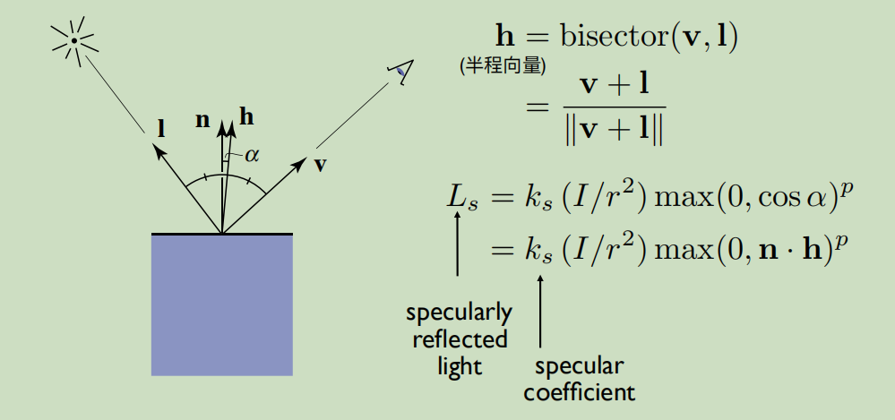

GAMES101课程笔记
下面这张图很好的概括了把模型渲染到电脑屏幕上面的完整步骤。主要可以总结为3大步骤：
为了简化问题，可以把像素想象成一个颜色均匀的小方格，一张图片就是由这些小方格堆叠而成：
假设现在得到了一些三角形，每个三角形的顶点都有颜色的信息，光栅化就是给这些三角形包住的区域上色的过程。光栅化又可以拆解为两步：
（上面从PPT里面截的图实际上是有BUG的，例如第二行最左边的像素点）
那么如何得到一个像素到屏幕的距离？对三角形的三个顶点与像素的中心点做插值就好了。我们知道，人眼是基于透视投影的，这就会造成近大远小的效果。想要模拟这个效果，就需要对三维模型的坐标做一些变换。变换由两步组成：

第一步，转换透视投影的坐标需要一些步骤推导（懒得写了），最终得到的矩阵为：\([[n,0,0,0],[0,n,0,0],[0,0,n+f,-nf],[0,0,1,0]]\)
这里提供一个简单的光照模型。考虑下面这张图的光照，分别由直射光，亮点以及墙壁的反射光构成。

对于直射光，可以把看成是球面波，因此直射光可以计算为： 对于亮点，可以认为视线与反射光线重合时会出现亮点，因此可以计算为：
对于墙壁反射的光等背景光，可以认为在整个环境里都是一个常数。最后，光照可以表示为如下公式： 通过上面的公式，我们发现只用计算出三种向量\(n,I,v\)就能够模拟光照了。其中\(I,v\)直接相减坐标便可求得，对于\(n\)，依然采用插值的思路，先求得三角形顶点的\(n\)，便可知三角形内任意一点的\(n\)，而三角形顶点的\(n\)又可以通过对各个面的\(n\)求平均得来，这样问题就全部解决了。